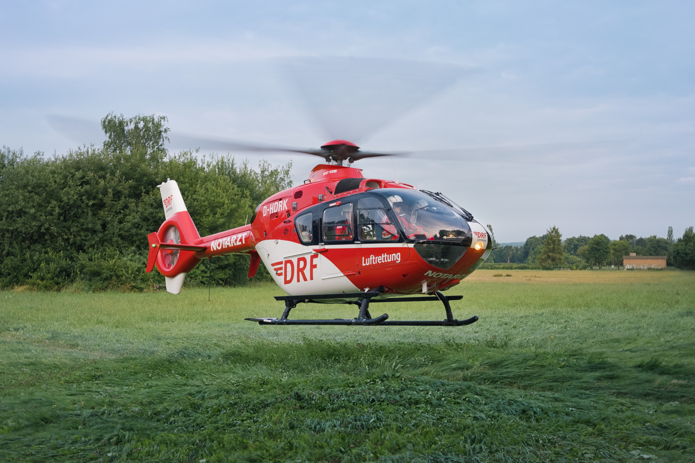
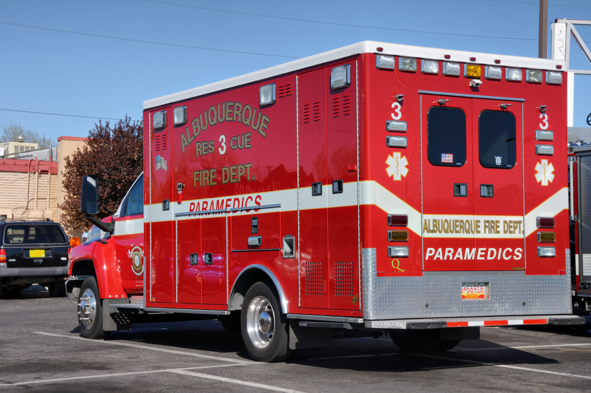

01描述事实Describe facts
02对比变化Compare changes
03明确复评Plan reassessment
观察线索Observation cues
识别机制、未知项和途中变化。Identify mechanism, unknowns, and en-route changes.
source_required这门课把院前预警、到院交接、xABCDE、休克识别、资源协调和转运交接连成一张图，帮助青年医生建立“从信息到复评”的系统思维。This course connects pre-arrival alert, bay handoff, xABCDE, shock recognition, resource coordination, and transfer handoff into one map so early clinicians can reason from information to reassessment.
从院前预警到转运交接，先把完整救治链看成一条可复评的路线。See the full care chain from pre-alert to transfer handoff as one reassessable route.
识别机制、未知项和途中变化。Identify mechanism, unknowns, and en-route changes.
source_required把口头信息转成团队共享板。Turn spoken information into a shared board.
pending_clinician_review影像和归处只作为团队讨论节点。Imaging and disposition remain team discussion nodes.
pending_local_confirmation每一站都追问四件事：看到什么、如何报告、需要哪些团队资源、下一次复评是什么。At every station, ask four things: what is observed, how it is reported, which team resources are needed, and what must be reassessed next.
机制、受伤线索、途中变化和已被确认的信息。Mechanism, injury cues, en-route change, and confirmed information.
明确说“尚不清楚”，不用推测补全空白。Say what is not yet known; do not fill gaps with inference.
用观察到的风险和变化趋势表达担心，不抢先下未证实诊断。State observed risk and trend without prematurely assigning an unconfirmed diagnosis.
说清谁来复核、复核什么，以及新信息回到哪个 xABCDE 环节。Name who will review what and where new information returns within xABCDE.
闭环提示：关键信息由接收者复述，发出者确认理解无误；具体用语按本地团队规范。Closed-loop cue: the receiver repeats key information and the sender confirms correct understanding; exact wording follows local team practice.
受力方式提示哪些区域需要持续关注。Mechanism suggests which regions require continuing attention.
合并皮肤、意识、呼吸、可见出血与生命体征趋势。Combine skin, mental state, breathing, visible bleeding, and vital-sign trends.
阴性 FAST 不能单独排除腹膜内或腹膜后出血；检查是信息节点，不是复评终点。A negative FAST alone does not exclude intraperitoneal or retroperitoneal bleeding; a test is an information node, not the end of reassessment.
对照之前趋势再看 xABCDE，同步更新当前担心和资源需求。Repeat xABCDE against the prior trend and update concerns and resource needs.
教学页展示风险识别与复评逻辑，不替代床旁诊疗或本院大出血流程。This page teaches risk recognition and reassessment logic; it does not replace bedside care or a local major-haemorrhage protocol.
真实照片呈现资源；课程流程图是教学概括，两者不能互相代替。Authentic photos show resources; course flowcharts are teaching summaries. They serve different purposes.

照片不能证明某名患者需要空中转运，也不能比较转运方式的收益。The photo does not establish a patient’s need for air transport or comparative benefit.
Julian Herzog（Wikimedia Commons 用户，本人作品） · CC BY 4.0（作者双许可 GFDL/CC BY 4.0，教学按 CC BY 4.0 署名） · Original source / 原图出处
DRF Luftrettung Eurocopter EC135 P2 Christoph 44 air ambulance helicopter (reg. D-HDRK, s/n 0477) during takeoff in Goettingen, Germany.
Wikimedia Commons 文件：DRF Luftrettung Eurocopter EC135 P2 Christoph 44 air ambulance helicopter during takeoff in Goettingen, Germany（无图号；原文件名 DRF Eurocopter EC135 Christoph 44 D-HDRK Goettingen 2017 03.jpg） · Wikimedia Commons 文件：DRF Luftrettung Eurocopter EC135 P2 Christoph 44 air ambulance helicopter during takeoff in Goettingen, Germany（无图号；原文件名 DRF Eurocopter EC135 Christoph 44 D-HDRK Goettingen 2017 03.jpg）
Source · CC BY 4.0（作者双许可 GFDL/CC BY 4.0，教学按 CC BY 4.0 署名）
保留原图；网页仅按比例显示。读图释义由课程另写，不是原作者诊疗结论。Original image retained and displayed proportionally. Teaching interpretation is separate from the original clinical conclusions.

画面无车内诊疗；不能据文件名想象救治过程。No treatment is visible inside; do not infer a care sequence from the filename.
Jim Legans, Jr（Flickr 原作者） · CC BY 2.0 · Original source / 原图出处
This ambulance represents paramedics getting to a scene where someone needs medical attention.
Wikimedia Commons 文件：Paramedics in an ambulance（无图号；原文件名 Paramedics in an ambulance.jpg；来源 flickr.com/photos/9575673@N08/3388664448） · Wikimedia Commons 文件：Paramedics in an ambulance（无图号；原文件名 Paramedics in an ambulance.jpg；来源 flickr.com/photos/9575673@N08/3388664448）
保留原图；网页仅按比例显示。读图释义由课程另写，不是原作者诊疗结论。Original image retained and displayed proportionally. Teaching interpretation is separate from the original clinical conclusions.
转运讨论应包含所需救治能力、预警内容、交通与资源状态，而不是只列医院名字。Transport discussions include required care capability, pre-alert information, access and resources, not just a hospital name.
连续传递机制、生命体征趋势、干预与反应、未解决问题以及下一责任人。Transmit mechanism, vital trends, interventions and responses, unresolved questions and the next responsible person.
离开现场、到院和转科是重新评估的节点；“已经检查”不能代替当前状态。Departure, arrival and transfer between teams are reassessment points; completed tests do not replace current status.
真实公开图用于观察训练；病例与指南各自标明来源，病例报告不能单独建立普遍治疗规则。临床适用性仍待教师逐项复核。Public images support observation training. Case reports and guidelines are distinguished; a case report alone cannot establish a general treatment rule. Clinical applicability remains pending teacher review.
三个练习均使用合成情境，只评价信息分类、资源识别和团队语言，不评价个体化治疗选择。All three exercises use synthetic scenarios and assess information sorting, resource recognition, and team wording—not individualized treatment choices.
先区分事实、缺口、担忧与下一次复评。Separate facts, gaps, concerns, and the next reassessment.
成人道路交通伤到院，团队正在整合院前信息、生命体征趋势和已完成检查。An adult arrives after a road-traffic injury while the team integrates prehospital information, vital-sign trends, and completed investigations.
完成四项分类后查看反馈。Complete all four classifications to see feedback.
识别“被提到的资源”及其状态差异。Identify mentioned resources and distinguish their status.
影像团队已收到预警；血库已联络；手术/介入资源状态待协调；接收单元责任人尚未明确。Imaging has received the pre-alert; the blood bank has been contacted; operating/interventional capacity is pending coordination; the receiving-unit owner is not yet identified.
提示：被提到并不等于已经可用。Hint: mentioned does not mean available.
选择能启动团队信息整合与复述确认的短句。Choose wording that triggers team integration and check-back.
CALL-OUT → CHECK-BACK
发送者说明变化与请求，接收者复述重点和下一责任。The sender states the change and request; the receiver repeats the key point and next responsibility.
选择后查看为什么这句话更适合闭环沟通。Choose an option to see why it better supports closed-loop communication.
CLAIM-TRAUMA-ACADEMY-004-OBSIDIAN-STRUCTURE-INPUT急诊创伤流程路径知识库作为课程结构输入，不作为公开医学 claim 自动批准。The emergency trauma pathway knowledge base is used as course-structure input, not automatic approval of public medical claims.
source_index_pending_reviewCLAIM-TRAUMA-ACADEMY-004-LOCAL-PATHWAY创伤团队、血库、影像、手术、介入、ICU 和转运资源路径需本院授权流程确认。Trauma team, blood bank, imaging, surgery, interventional services, ICU, and transfer resource pathways require local institutional confirmation.
pending_local_confirmationCLAIM-TRAUMA-ACADEMY-004-CLINICAL-REVIEW救治链课程需要项目负责人或指定创伤专家终审后才可进入正式教学使用。The care-chain course requires final review by the project lead or designated trauma specialist before formal teaching use.
pending_clinician_review